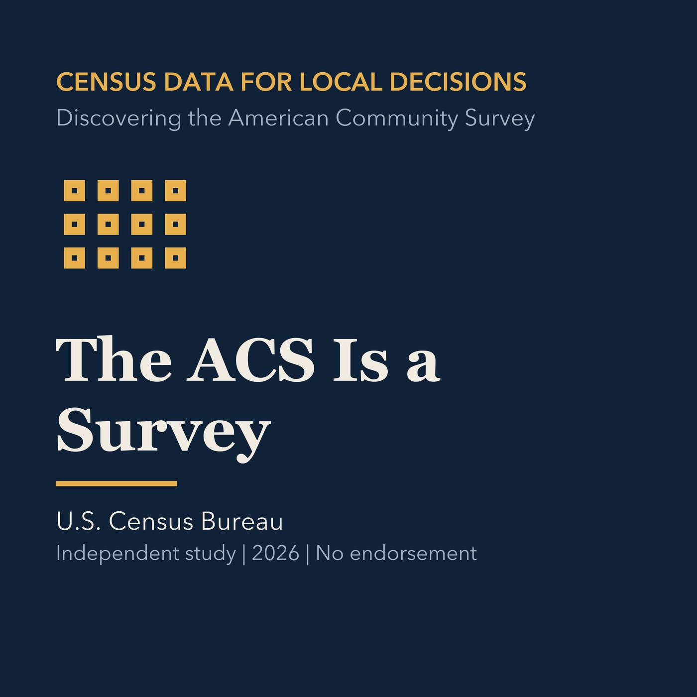

EPISODE 02
The ACS Is a Survey
Explains ACS period estimates, samples, topics, and appropriate interpretation.

- Stable GUID
1968dd99-86ec-5c9d-8ec6-a225ca5c19c2- Release
- census-academy-v2026.2
- SHA-256
ce846f9a2b02770abb1f41206cf6c4db5e6a263bbb601ede50ff39dc93c40458